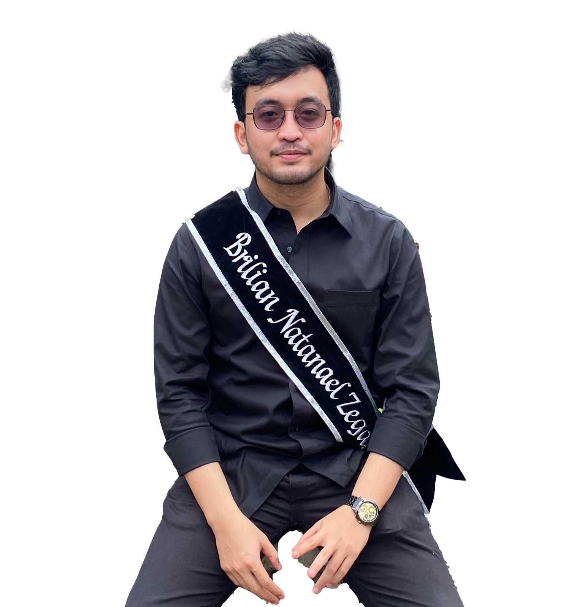

About Me

I was graduated in January 2022 and looking for opportunities in geospatial information science, data science, and oil & gas company. While I was preparing for a job application, I took a Web Development course and worked on several related projects. And now, I am currently working in IT services and consulting company as a Frontend Developer.
Skills
HTML
CSS(Bootstrap,Tailwind)
JavaScript(Node.js,React.js)
Python(Sk-learn,Tensorflow)
GIS(ArcGIS,QGIS)
Tableau
PHP
MySQL
Bandung Institute of Technology (Aug 2017 - Jan 2022)
B.Eng. Geophysical Engineering
- Grade: 3.02/4.00
- Supervised by Dr. Ir. Zulfakriza and Dr. Shindy Rosalia
Cahaya Senior High School (Jul 2014 - Mei 2017)
Sains Class
- Grade: 85/100
- Bronze medal math olympiad 2016 (North Sumatra)
- Top 10 math olympiad 2016 (Medan city)
Hoomix (Feb 2022 - present)
Front-end Developer
- Determined the structure and designed the Hoomix dashboard (Shopify) to solve problem points of clients.
- Collaborated with UI/UX and back-end developers to maintain the design system.
- Performed unit testing and functional testing.
Bandung Institue of Technology (Jul 2021 – Jan 2022)
Research Project Assistant
- Collected and filtered 1000+ data seismic signal components on 15 GeoforschungsZentrum (GFZ) stations network.
- Processed and evaluated all data to generate appropriate parameters.
- Found the correlation between geomorphology of Yogyakarta and data parameters to provide 2D map surface.
- Interpreted 2D map surfaces to indicate area of significant seismic hazard.
Bandung Institue of Technology (Feb 2020 – Feb 2020)
Staff Research Associate
- Coordinated with 2 geophysics teams and ensured the project are completed in a timely manner.
- Installed 8 GPS tools and performed quality control tests to ensure the tools work properly.
HIMA TG "TERRA" ITB (Jan 2020 – Dec 2020)
Senator
- Informed, Voiced, and Established the important issues to members.
- Made 3 infographic videos and posters for members to understand easily.
- Managed and encouraged staffs to perform their respective responsibilities.
Kongres KM ITB (Jul 2019 – Nov 2019)
Ad Hoc Team
- Solved specific problems related to student associations election issues
Indonesian Undergraduate Geophysical Competition (Jan 2019 – Jul 2019)
Logistic Staff
- Determined the logistics system management and reported of item used.
The Web Development Course | OnlyKiosk Tech (Feb 2022 - present)
- Improved web development skills through creating front/back-end APPs.
- Mastered in web developer tools and image-processing skills.
The Data Science Course | 365 Careers (Jan 2022 - Feb 2022)
- Understood the data science field behind machine learning.
- Applied statistical and programming language techniques to visualize data.
Data Processing and Modelling for Geothermal Exploration | HAGI Oct 2021
- Processed and visualized the complex geoscience and engineering data in 3D for geothermal exploration.
Geophysical Python for Seismic Data Analysis | HMGI and STMKG (Sep 2021- Oct 2021)
- Developed python skills for reading, filtering, and plotting the statistics of earthquake